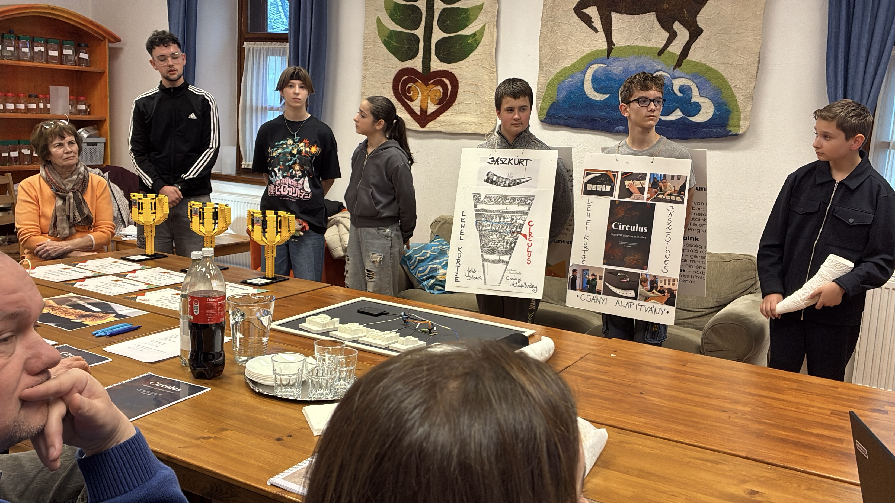
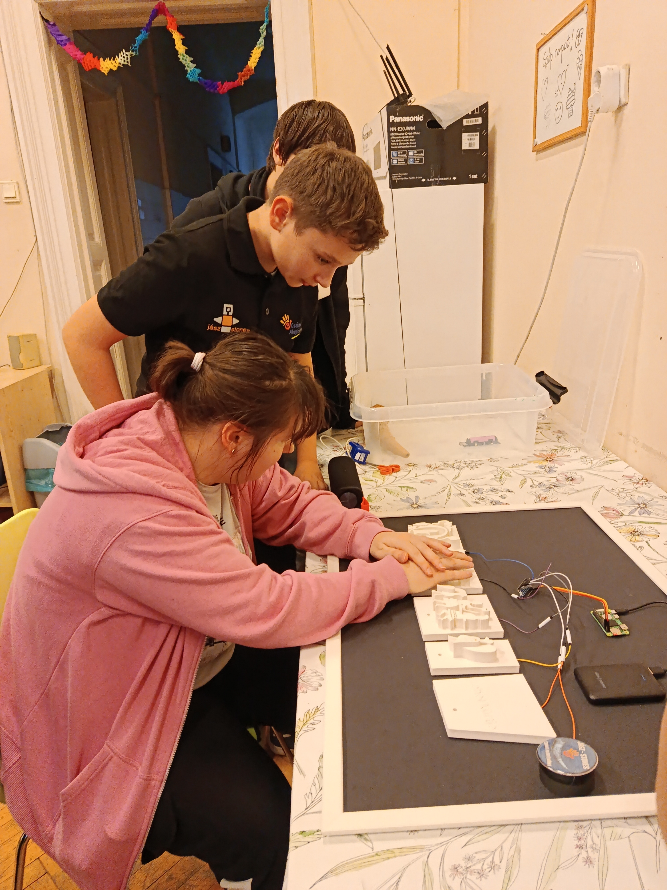

📝 Description
Jász Stones:
We are the Jászberény team of the Csányi Foundation. We have been competing for 5 years, and we created our project for the First LEGO League competition.
This year's season:
Connected to the "Unearthed" theme, we chose the Jász Horn, an important symbol of Jász identity.
Goal:
The goal of the project is to make the Jász Horn experienceable for everyone – especially for visually impaired people and people with disabilities – because the original artifact cannot be touched in the museum.
🖼️ Images


